Soy yo, nada más
Todo lo hago a mi manera, con mi estilo.
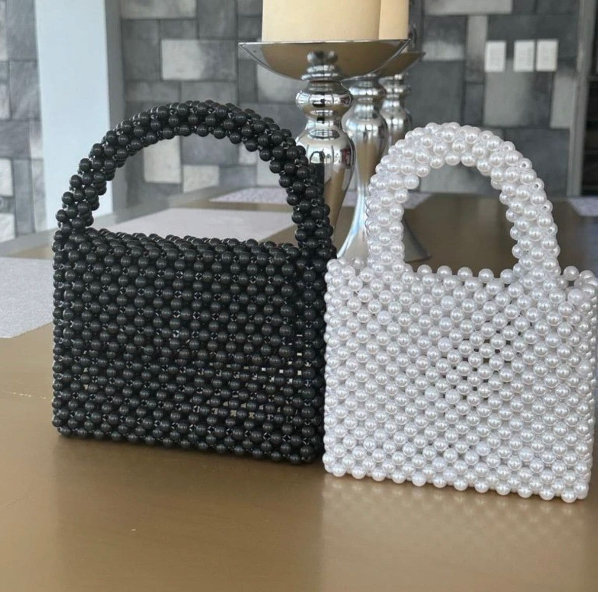
Arte artesanal con estilo
Creo cosas que se sienten de verdad, no solo se ven bonitas. 🎨💎
Ilustración, animación, cuadros pintados a mano y bolsos artesanales de perlas y nailo. Todo lo hago yo, con mis manos y con mucho cariño.
Hola, soy Carmen, soy diseñadora gráfica, y mi marca es Nova. Lo que más me apasiona y en lo que más me destaco es ilustrar: darle vida a las ideas con mis dibujos, crear imágenes que cuenten cosas y tengan su propio estilo.
También hago animaciones en After Effects y todo lo que tiene que ver con lo audiovisual, cuidando que todo quede ordenado, bonito y con mucha personalidad. Esa misma dedicación la pongo en todo lo que hago: además de eso, pinto cuadros y hago bolsas artesanales a mano con perlas y nailo, eligiendo bien cada material y cuidando cada detalle para que cada pieza sea única. Para mí todo es lo mismo: crear cosas que se vean bien y tengan sentido.
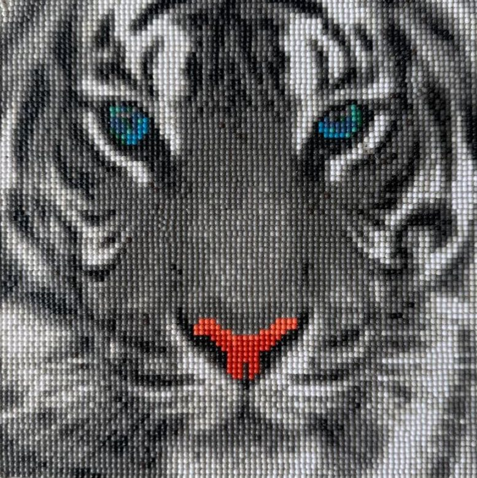
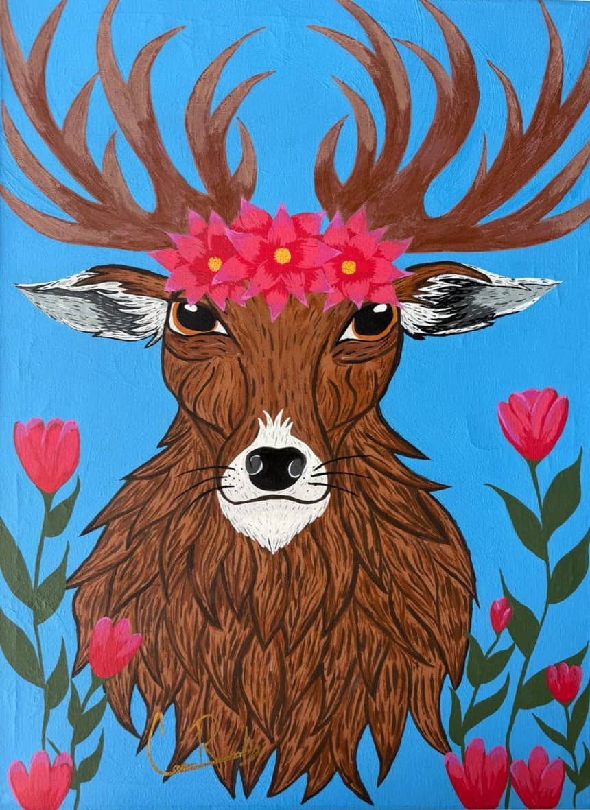
En Nova todo lo hago yo, con mis manos y con todo el cariño del mundo. Hago ilustraciones y animaciones y piezas hechas a mano que tienen mi estilo de verdad. Cada dibujo, cada animación y cada bolso son únicos, lo cuido al detalle y lo pienso tal cual mereces. Junto lo que aprendo en diseño con lo que nace de mis manos, para que todo lo que hagas cuente con tu historia, no solo la mía 🎨💎
Todo lo que ves aquí lo hice yo: sin equipos, sin marcas de fábrica, sin atajos.
Todo lo hago a mi manera, con mi estilo.
No dejo nada a medias. Un dibujo, una animación o un bolso… todo lo cuido pieza por pieza.
No soy una marca que esté lejos. Pongo el corazón en todo y quiero que sientas que lo hago pensando en ti.
Lo que hago lleva mi huella, mis dibujos, mis colores. Se ve que es Nova y no otra cosa.
Igual que las personas que la van a tener.
Lo que ves es lo que hay. Nada de fingir, solo trabajo hecho con cariño.
Desde pequeña ayudaba en la empresa familiar, que distribuía alimentos a los batallones militares. Ahí aprendí desde niña el valor del trabajo, el cuidado y el compromiso con lo que uno hace.
Soy estudiante de Diseño Gráfico en la Universidad Autónoma del Caribe, y junto lo que aprendo en la facultad con lo que creo con mis manos.
He pintado, regalado y vendido cuadros propios, y empiezo el emprendimiento de los bolsos artesanales.
Me inspira todo lo que tiene alma y no se hace de prisa. La naturaleza, los colores que veo a mi alrededor y todo lo que se hace con las manos. También las historias de las personas, los momentos especiales y esas cosas que no se repiten dos veces. Me guía la dedicación que vi en mi familia desde pequeña: hacer las cosas bien, con corazón y pensando en los demás.
Algunos de mis trabajos académicos, entre ellos un cuadro y varias ilustraciones, fueron seleccionados para ser exhibidos en la facultad de Diseño y en distintas ferias.
Y lo mejor es saber que lo que hago con cariño y dedicación tiene un lugar.
Cinco formas de crear. Elige una para ver cómo la trabajo.
Mostrando 5 de 5 proyectos.
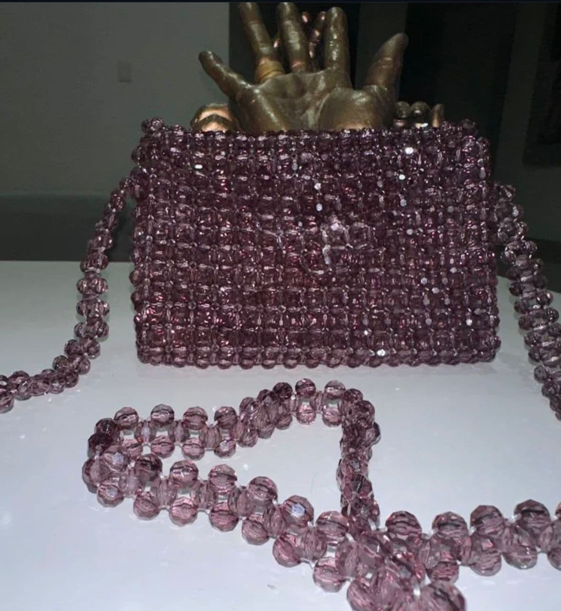
BolsosPiezas únicas engarzadas y cosidas a mano, una por una.
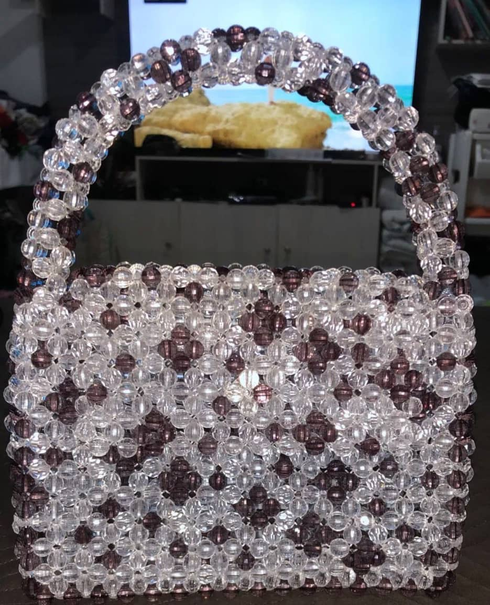
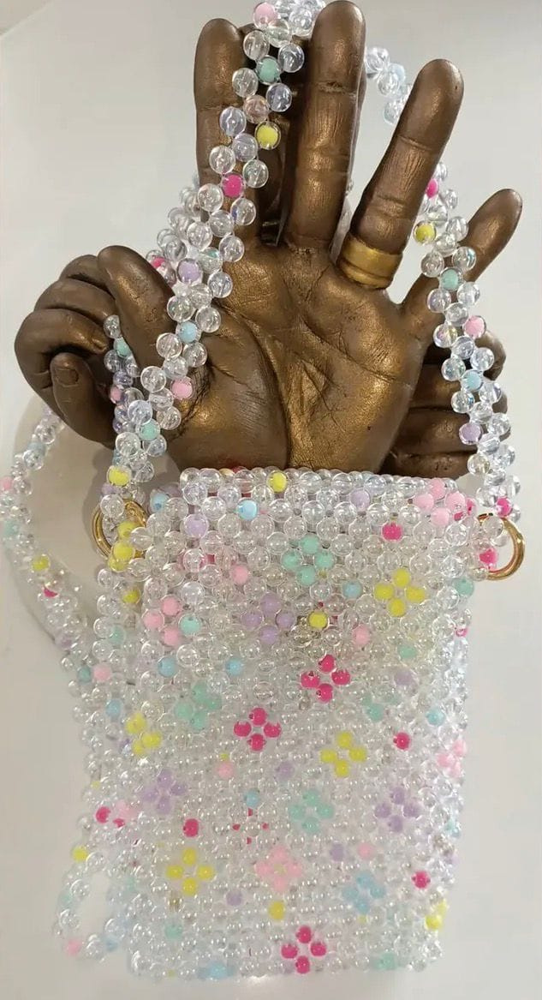
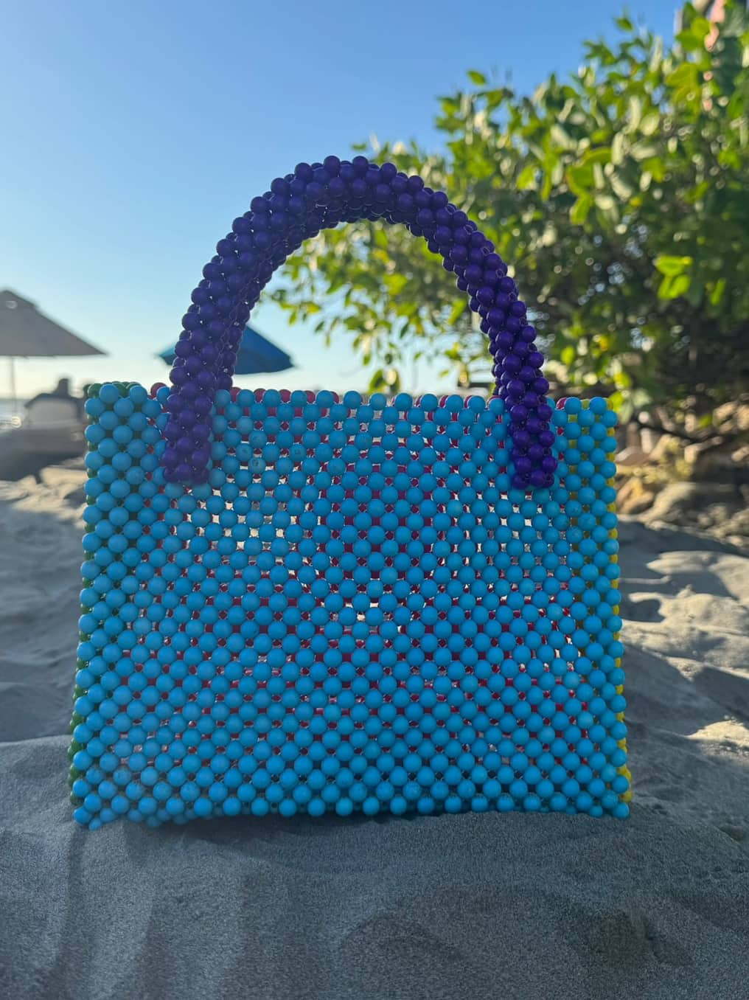
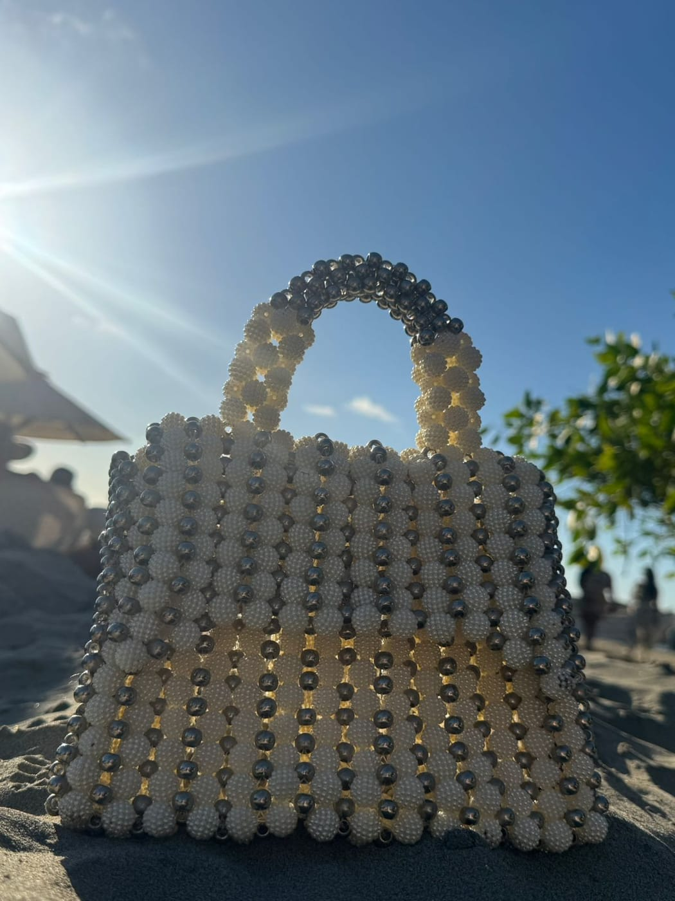
El emprendimiento nació porque quería que Nova no se quedara solo en lo digital: quería que alguien pudiera llevar una pieza mía encima. Vi que la gente busca cosas que no se vean igual en todas partes, y los bolsos de perlas y nailo son justo eso: piezas únicas, hechas a mano y pensadas para alguien. El problema era empezar de cero un emprendimiento sin tener un lugar donde mostrar lo que hacía, y este portafolio es la forma de darle un sitio y una identidad.
Todo lo hago yo. Elijo las perlas, el nailo y los materiales, y las monto a mano pieza por pieza. Yo diseño, yo las confezo y yo reviso que cada una quede pareja y bien hecha. Yo las fotografío y yo entrego.
Primero elijo el diseño y los colores de las perlas y del hilo. Después las engarzo y las coso a mano, una por una, cuidando que la tensión quede pareja. Al final reviso cada punto, cierro y pongo el cierre. Si una pieza no me gusta, la deshago y la empiezo otra vez: prefiero tardar más que entregar algo que no sienta mío.
Perlas, hilo de nailo, agujas, broches y materiales de bijutería. Solo trabajo a mano: no hay máquina.
Bolsos artesanales únicos, hechos con materiales elegidos con cuidado y pensados para momentos especiales. Cada uno es distinto del otro y en cada detalle se reconoce mi mano.
He vendido alrededor de 20 bolsos personalizados. Todavía no tengo métricas más grandes y prefiero no inventar ninguna. Lo que sí me llevo es que aprendí a costear un producto, a elegir materiales y a entregar algo terminado con cariño.
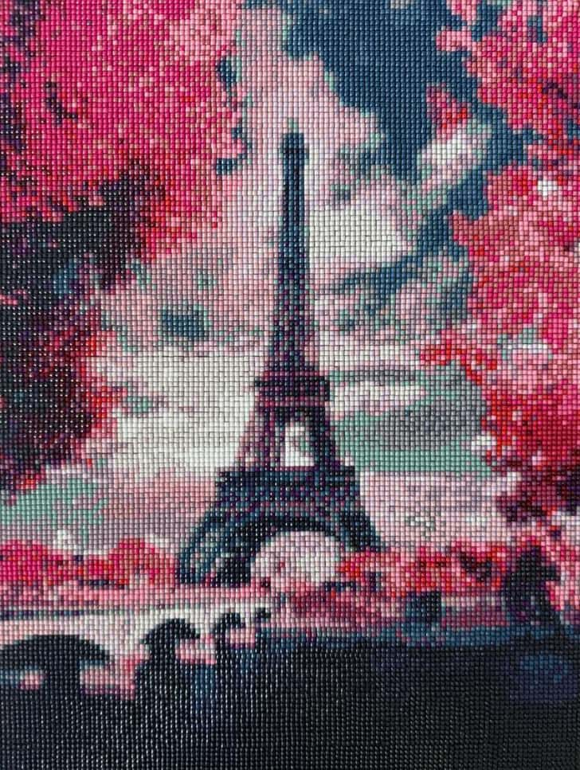
CuadrosUna serie pintada capa por capa, con lienzo, madera y piedras.
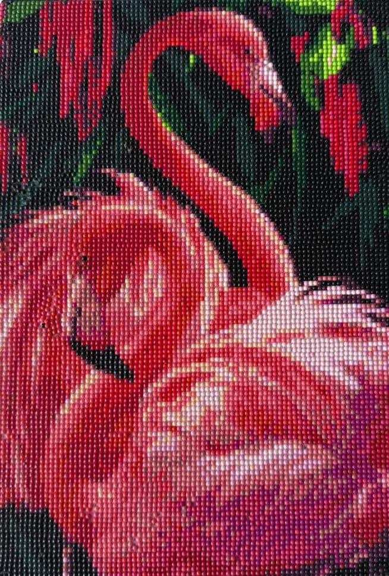
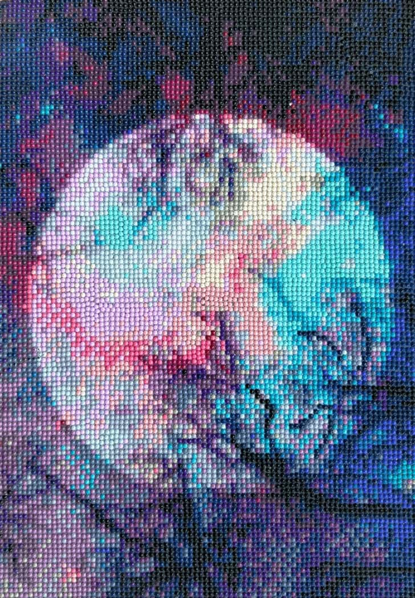
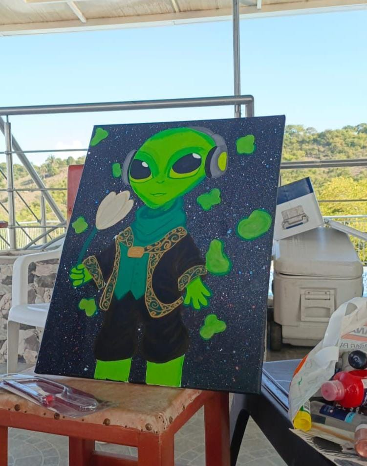
Pinto desde hace mucho, y lo que sale de mis manos siempre ha sido mi manera de descansar de lo digital y de mostrar algo que es cien por ciento hecho por mí. El problema es que los cuadros vivían sueltos: algunos regalados, algunos vendidos y otros guardados en mi casa, sin que nadie más los viera. Con esta serie los junto y les doy un mismo lenguaje: piezas que no se vean como una foto de internet, sino como algo pintado a mano.
Yo pinto todo. Elijo los temas, preparo la superficie, mezclo los colores y pinto yo misma, una pieza a una y sin apuro. También pinto piedras y les trabajo detalles pequeños con el pincel.
Primero elijo el tema y hago un boceto pequeño. Después preparo la superficie, que puede ser lienzo o madera, y pinto por capas, dejando que cada capa seque antes de la otra. Cuando termino le doy una capa final y reviso los bordes. No hay prisa: un cuadro puede llevarme varios días y eso está bien.
Pinceles, pintura acrílica y acrílica al óleo, lienzos y maderas preparadas, y piedras. Aquí no uso herramientas digitales: es todo a mano.
Una serie de cuadros pintados a mano, cada uno único y pensado para colgar en casa o para regalar. Junto con ellos van las piedras pintadas, que sirven como piezas pequeñas que acompañan a los bolsos y que rematan esos momentos especiales que no se repiten. Todo lleva mi sello, para que se vea que lo pinté yo.
He pintado, regalado y vendido cuadros propios, y he realizado más de 10 cuadros decorativos entre pinturas y composiciones con piedras. Uno de ellos fue seleccionado para ser exhibido en la facultad de Diseño y en distintas ferias.
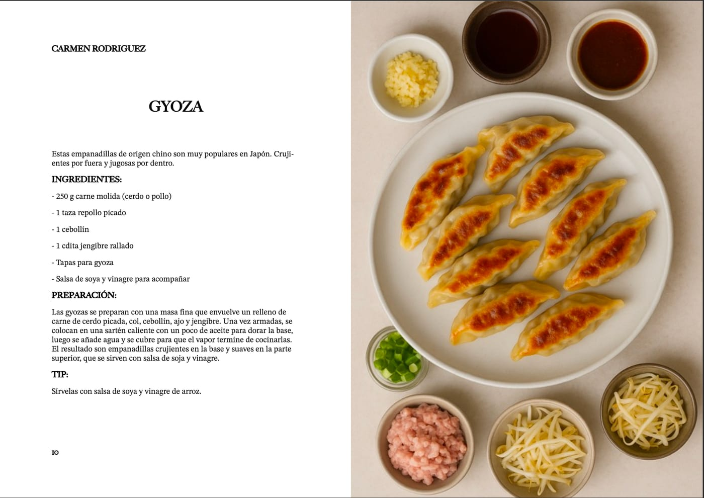
Diseño editorialLibros y revistas maquetados página por página, con retícula y jerarquía clara.
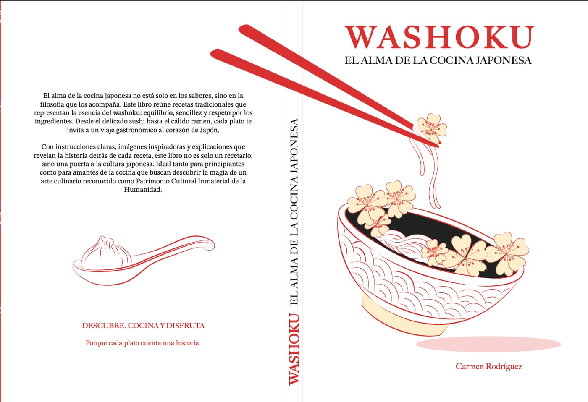
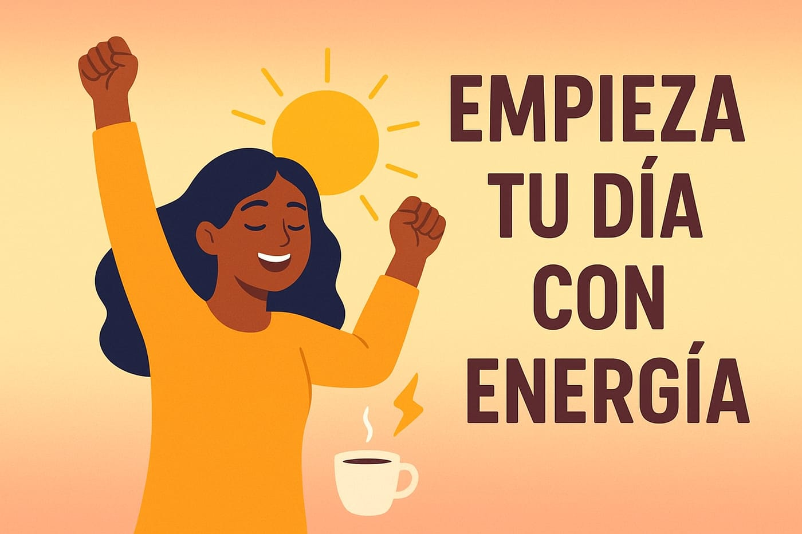
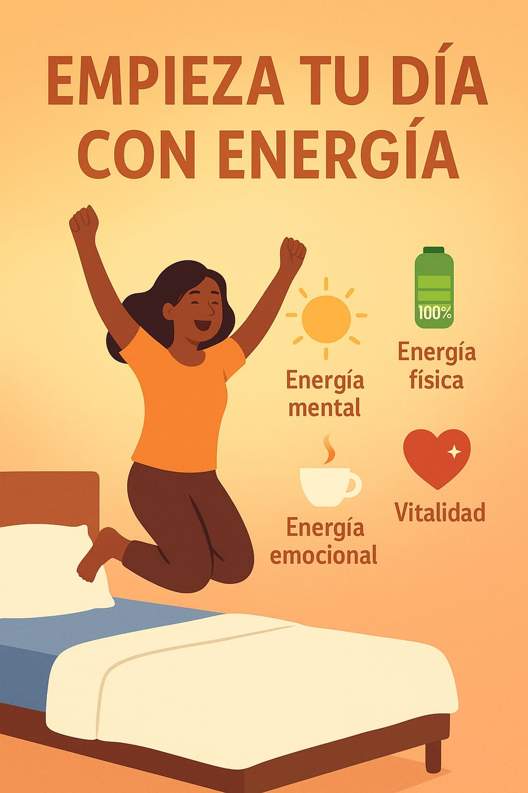
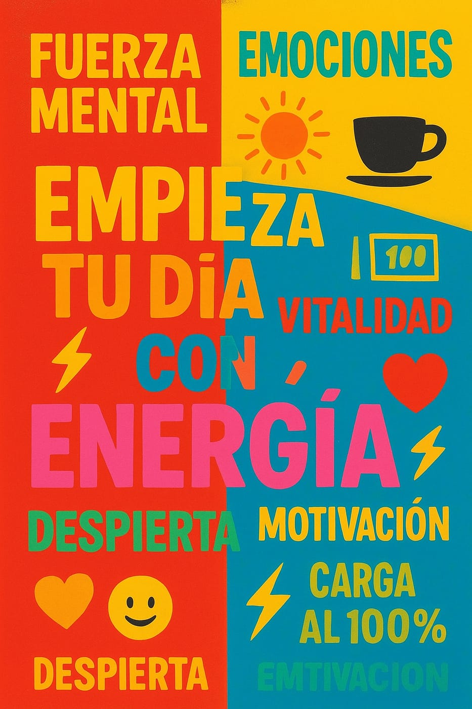
Doy forma a libros y revistas: organizo cada página para que los textos y las imágenes respiren, se entiendan y no se vean apretados. Este proyecto nació de una tarea de la carrera donde tuve que armar una publicación completa, desde la portada hasta la contraportada. El problema era que la información se acumulaba sin jerarquía, y el resultado es una publicación donde se ve exactamente qué es lo importante.
Yo hago todo el proceso: elijo la tipografía, armo la retícula, distribuyo los espacios y reviso página por página antes de entregar.
Primero defino la retícula y los estilos de texto. Después voy colocando los bloques de contenido, ajustando el espacio hasta que la página respire. Al final reviso la publicación completa varias veces: tipografía, márgenes, tamaños y que todo esté donde debe estar.
Adobe Illustrator, Adobe Photoshop y Figma para maquetar y organizar la publicación.
Una publicación con jerarquía clara: se lee de un vistazo, cada página tiene su propio ritmo y ninguna se siente apretada. Cada publicación lleva mi estilo y dedicación, lista para compartir.
No tengo cifras de audiencia y prefiero no inventar ninguna. Lo que sí me llevo es que aprendí a organizar contenido real dentro de una retícula y a que todo tenga un motivo para estar donde está.
Ilustraciones originales dibujadas a mano, coloreadas y digitalizadas por mí.
Mi ilustración siempre fue mi forma de contar cosas, y eso fue justo lo que me pidió la carrera: dejar de dibujar solo para mí y hacer imágenes que le sirvan a alguien más. El problema era que tenía muchos dibujos hechos a lo largo de la carrera y no había un lugar donde se vieran juntos ni se entendieran como parte de un mismo trabajo. Con la colección de ilustraciones de Nova los uno y les doy un nombre, un estilo y un orden, para que quien los vea sepa qué soy y qué sé hacer.
Yo lo hago todo. Dibujo a mano, elijo la paleta, coloreo y después digitalizo la ilustración para dejarla lista para la web. Investigo, ilustro y le pongo el detalle final a cada pieza; no le dejo nada a nadie más.
Primero miro bien qué quiero contar y lo dibujo a mano, porque así es como me salen las cosas de verdad. Después lo paso a digital, lo ordeno y le doy color. Al final reviso todo otra vez, porque no me gusta dejar nada a medias: cada pieza tiene que verse bonita y tener sentido, no solo que se vea linda.
Adobe Illustrator y Photoshop para la ilustración digital, y lápiz, marcadores y acuarelas para los bocetos y el color inicial. Figma para ordenar el portafolio antes de pasarlo a la web.
Una colección de ilustraciones que se entienden como una sola serie: mismo estilo, misma manera de dibujar y mismo cuidado en cada detalle. Quien la ve reconoce que hay una persona detrás de cada imagen.
Varias ilustraciones mías fueron seleccionadas, junto con un cuadro, para ser exhibidas en la facultad de Diseño y en distintas ferias.
Historias que necesitan movimiento para que se entiendan. Animadas cuadro por cuadro.
Hago animaciones en After Effects porque las historias también necesitan movimiento para que se entiendan. Muchos de mis dibujos ya contaban algo, pero quietos se quedaban a medias. El problema era que mis animaciones estaban sueltas en mi computador, sin un lugar donde verlas ni saber qué las unía. Con esta sección las junto y dejo claro que animo, y que lo hago yo.
Yo lo hago todo. Yo dibujo el storyboard, yo animo cuadro por cuadro en After Effects y yo le pongo el color, el sonido y el detalle final. Nadie más toca mis animaciones.
Primero dibujo a mano, porque así es como me salen las cosas de verdad. Después paso el dibujo a After Effects y animo cuadro por cuadro, dándole movimiento poco a poco para que la historia también cobre vida. Luego meto el color y reviso varias veces, porque no me gusta dejar nada a medias.
After Effects para el movimiento y el color. Adobe Illustrator y Photoshop para preparar las piezas y las texturas. Auriculares y una buena pista de música para el sonido.
Unas animaciones cortas que muestran que sé mover una ilustración, no solo dibujarla. Cada una tiene mi estilo y mi manera de contar, y lo importante es que se ven juntas.
Todavía no tengo vistas públicas y prefiero no inventar ninguna. Lo que sí me llevo es que aprendí a animar cuadro por cuadro sin perder el estilo del dibujo original, y que el movimiento tiene que ir con calma: si algo se mueve muy rápido, no se siente.
Cuéntame qué tienes en mente y lo armamos juntos.
Creación de ilustraciones originales hechas a mano. Para personas que buscan piezas únicas con expresión visual.
Escríbeme por WhatsAppObra original con técnicas manuales, lista para decorar o regalar. Para personas que valoran el arte hecho con dedicación.
Escríbeme por WhatsAppDiseño y confección de bolsos artesanales con materiales de calidad, hechos a mano con perlas y nailo. Para quienes buscan un accesorio único y especial.
Escríbeme por WhatsAppDiseño de libros y revistas organizando cada página con textos e imágenes en armonía y con cuidado.
Escríbeme por WhatsApp| Servicio | Precio |
|---|---|
| Ilustración (1 pieza original) | desde $80.000 COP |
| Bolso de perlas y nailo (1 pieza) | desde $90.000 COP |
| Cuadro pintado a mano | desde $115.000 COP |
| Cuadro con piedras decorativas | desde $95.000 COP |
| Animación corta (hasta 15 s) | desde $320.000 COP |
| Diseño editorial (libro o revista) | desde $280.000 COP |
Una pieza individual con revisión y ajustes incluidos
Desde $120.000 COP
Escribirme por WhatsAppUn paquete de piezas o una serie de ilustraciones
Desde $350.000 COP
Solicitar cotizaciónUn proyecto completo de identidad visual o una animación
Desde $800.000 COP
Agendar una conversaciónPrecios de referencia por unidad, en pesos colombianos (COP). La cotización final se cierra por proyecto, según el alcance. Métodos de pago: Nequi, Daviplata y transferencia bancaria. Respondo dentro de los dos días hábiles siguientes.
Trabajo por proyecto, en Barranquilla y también por correo para clientes fuera de Colombia.
Correo o WhatsApp, como te quede más fácil. Respondo dentro de los dos días hábiles siguientes.